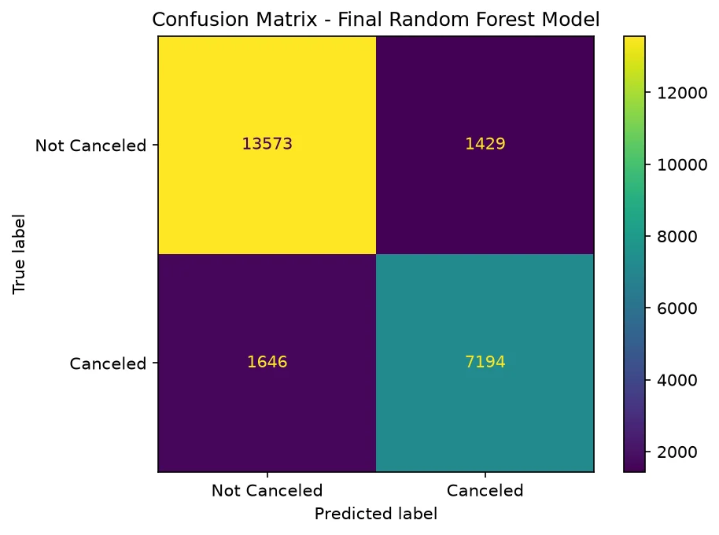

Project 02 · Machine learning
Hotel Cancellation
Prediction
Predicting hotel booking cancellations before they happen, using data available at the time of reservation reaching 87% accuracy.

Overview
Can you predict a cancellation before it happens?
This project explores hotel booking data to understand the factors associated with cancellations and build a model capable of predicting them.
The analysis involved preparing the dataset, exploring booking patterns, and comparing different models to find the one that predicted cancellations most accurately. (Logistic Regression vs. Random Forest)
Toolkit